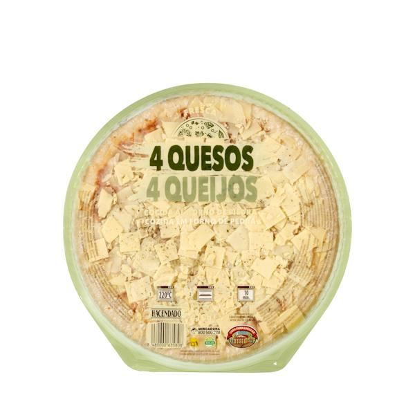

| Volver atras |
|---|

Una propuesta clásica de la cocina italiana con una base de masa horneada, crujiente por fuera y esponjosa por dentro, cubierta con una capa de salsa de tomate especiada con orégano. Su principal atractivo es la generosa mezcla de quesos fundidos (como mozzarella, cheddar, queso curado o azul), que se derriten uniformemente creando una capa elástica, sabrosa y cremosa con cada bocado. Es una opción rápida, sabrosa y fácil de preparar al horno, perfecta para comidas informales, cenas rápidas o para compartir en grupo.